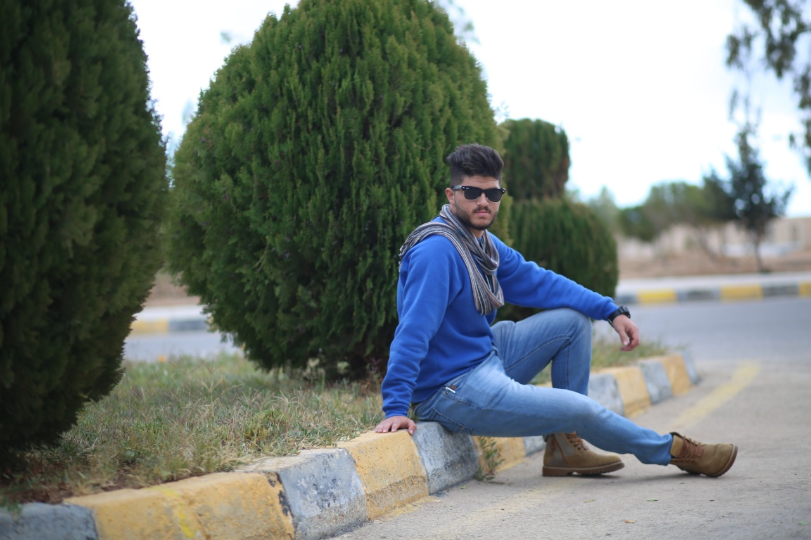

Welcome to my personal page I am Salem Nihad, I am 22 years old from Jordan Irbid, a junior developer I hope that you like my page Why do I write my name with the letter “i”, I don’t know, but I prefer it, but on official papers my name is with the letter “e”

About me
About me
|
Salem Nihad Raji Abdul Rahman I am 22 years old, I was born in 1998 in Irbid, and I have lived there most of my life I graduated from high school in 2017 and then enrolled in the university for three years to study the major I want, which is programming. Previously, I played in Al Hussein Irbid Football Club It is one of my biggest interests and hobbies |
Education
|
I studied computer information systems at Al-Hussein Bin Talal University, with a good grade I graduated from it in 2020 and I was also participating in all educational and training courses, such as the Jordanian Games Lab, in building games, and also in 2D and 3D design. My most interest was in articles that contain programming in all its forms |
Now
|
At the moment, I am studying website programming after I graduated from Luminous College |
In this list I will review five things I learned in this course
- Types of tags in HTML
- The difference between git and github and how to use them
- CSS and how to use it
- Conditional statement
- Loops
Experience
I trained in the Ministry of Digital Economy and Entrepreneurship for two months in the e-government department and learned a lot of things related to websites |
Top Ten
In this list I will review the ten best graphics cards for me
- RTX3060Ti
- RTX3070
- RTX2060Super
- RTX3090
- RX6800
- GTX1660
- GTX1650Super
- RX580
- RX5600XT
- RTX2080Ti